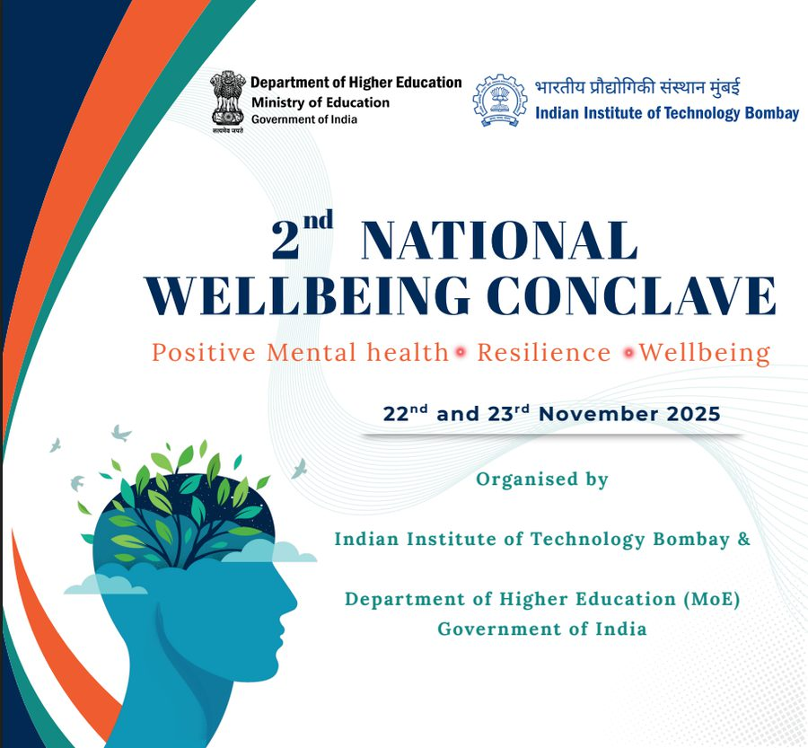

Symposium
Inspiring talks by thought leaders, practitioners and researchers on mental health awareness, resilience and holistic wellbeing.
EventsHeld 22–23 November 2025
Integrated Approach for Promoting Mental Health, Resilience & Wellbeing

About the conclave
A space for dialogue and collaboration among students and faculty, inspiring institutions to integrate wellbeing into every aspect of campus life.
Hosted at IIT Bombay, the conclave brought together participants from Higher Educational Institutions (HEIs) across the country for a vibrant two-day exchange of ideas, experiences and initiatives that promote mental health and holistic wellbeing, fostering resilience, compassion and meaningful engagement.
Under the Integrated Approach, the conclave was conceived for both students and faculty: an avenue for HEIs to explore, together, how to build an ecosystem that puts the mental health and wellbeing of every member of the academic community first.
Exchange ideas on mental health and wellbeing practices in campuses.
Showcase innovative wellbeing initiatives from HEIs.
Share best practices for supporting student and faculty wellbeing.
Host an exhibition on wellbeing and mental health awareness.
Engage participants in mindfulness and team-building activities.
The conclave emphasised meaningful student–faculty relationships and a supportive institutional culture that nurtures both personal and professional growth.
It also aimed to lay the foundation for similar initiatives in other regions of the country, widening the network of HEIs committed to wellbeing in higher education.
Six ways in: listen, discuss, practise, share, explore and reflect.
Inspiring talks by thought leaders, practitioners and researchers on mental health awareness, resilience and holistic wellbeing.
Engaging conversations with experts and campus leaders on fostering emotionally supportive, thriving university environments.
Experiential sessions with hands-on tools and practices for mindfulness, emotional intelligence and community care.
Sessions showcasing successful wellbeing models and initiatives from higher education institutions.
Displays of wellbeing resources, student initiatives, organisations and tools that support mental health on campus.
Creative, participatory experiences that encourage self-reflection, connection and positive mental health practices.
Testimonials
Attending the National Wellbeing Conclave 2025 at IIT Bombay felt like being part of something deeply meaningful. It was not just a conference, but a movement — one that recognized student wellbeing as central to education and growth. I left not just with ideas, but with resolve: to carry forward the practices, conversations, and commitments I saw and heard. I am looking forward to attend many such events so that I can render my services for ensuring mental well being of myself and my students.
Dr. Saima BashirSr. Asst. Professor, Central University of Kashmir
The National Wellbeing Conclave 2025 at IIT Bombay was a meaningful and enriching experience for me. The integrated approach—bringing together psychologists, somnologists, dieticians, and nutritionists … offered a holistic understanding of mental health, resilience, and wellbeing. The panel discussions were insightful, the workshops highly engaging, and the activities thoughtfully designed to promote self-reflection and practical wellbeing skills. … Overall, I felt that the conclave provided valuable knowledge and actionable strategies that can be applied both personally and professionally.
Ujjala DasResearch Scholar, The English and Foreign Languages University, Hyderabad
The wellbeing conclave all together was a very good as well eye opening experience. Although the prog[ramme] was fully packed the first day, it was worthwhile. Venues, food, programmes were amazing. … All thanks to you, we had a wonderful and insightful experience.
Dr. C. LalfakzualiAssistant Professor, Mizoram University
… It was really well structured smoothly aligned, felt comfortable and lively. All of you were extremely welcoming; it was a space of pure value and respect. The team really deserves appreciation and we wish to see you soon again! Thank you for having us.
MitaliStudent delegate, University of Delhi
A glimpse of the sessions, activities and moments from the 2nd National Wellbeing Conclave at IIT Bombay.
Content and photographs: Student Wellness Centre, IIT Bombay (swc.iitb.ac.in/NWC2025).